Start.ai Registration & Onboarding Tutorial Revamp
Context Summary
Start AI is a platform that trains AI through crowdsourced efforts, and is fully accessible by members of the public. Participants can earn income via doing simple AI labelling tasks which help to feed databases that eventually train the AI algorithms for other ByteDance products. Some examples of tasks include image identification, audio & speech analysis and more.
In the new registration and onborading revamp, users were shown that they could earn money through doing some of these simple tasks. The pictures on the right show the homepage and earnings page of the app.
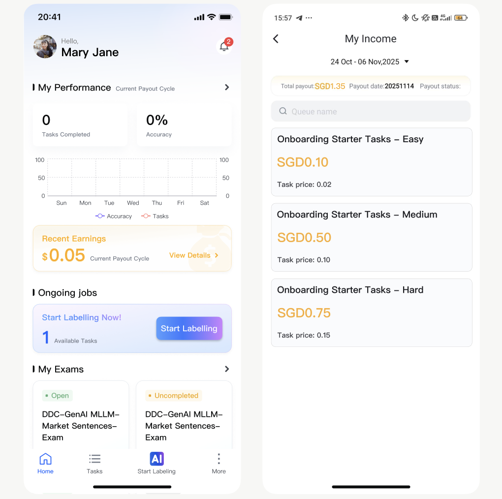
Overall Project Benefit Metrics
In summary, after implementing the streamlined registration & onboarding process, our team saw significant increases in click-through rate, registration completion, and onboarding completion as seen below.
1. The Problem
Nearly half of all new users (48.2%) were dropping off before completing the our app's original onboarding journey. We were losing potential users before they even got started.
I pulled the raw funnel data to see exactly where people were quitting, building the SQL tables and dashboards that became the benchmark for this project.
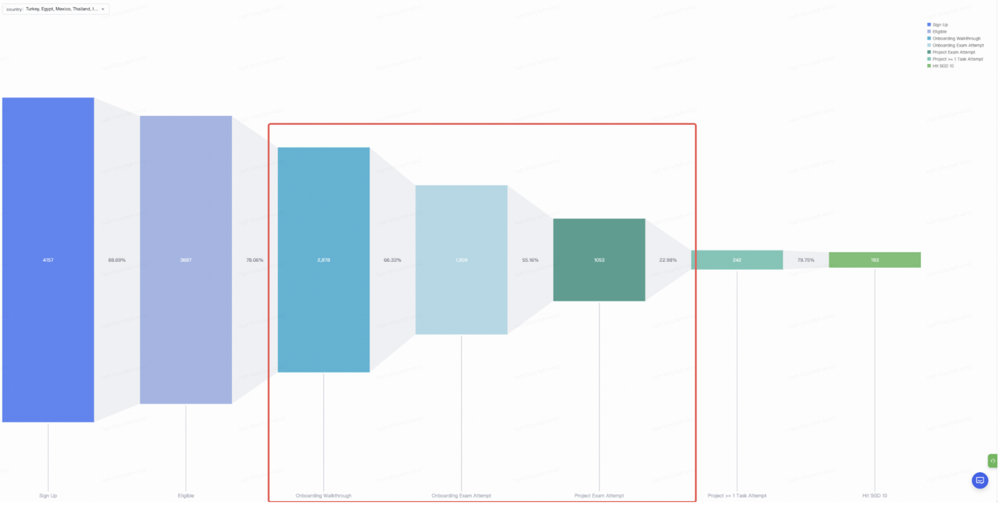
2. The Product Solution
Our solution focused on improving conversion rate by streamlining the registration & onboarding on the app, simplifying the registration form into shorter, multi-step sections that users could complete with less effort and cognitive load.
Being the product owner in charge of this project, I proposed doing this through 3 main steps:
- Allow users to experience immersive real labelling experience immediately (with 3 difficulty tiers of tasks)
- Reduced the number of steps a new user sees from registration to interactive labelling to 5 steps
- Immediate reward feedback to users on potential monetary gain to maintain engagement

3. The results
- Click-through to registration: 4% → 16.9%
- Registration completion: 70% → 82%
- Onboarding completion: 8.4% → 64.1%
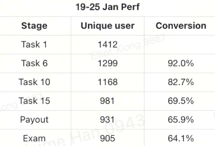
4. My Role
As product owner, I was responsible for the full lifecycle — from analysing the onboarding funnel and narrowing in on the drop-off in the data, to designing the detailed user journeys and interfaces, to A/B Testing, and tracking metrics. I ran the QA myself and tracked the funnel post-launch to confirm the redesign actually moved the numbers.
Details of Work
I developed a thorough detailed Product Requirement Document (PRD), with user journey maps, task logic maps, specific UI requirements and more, communicating directly with lead developers based in Shanghai on a daily basis.
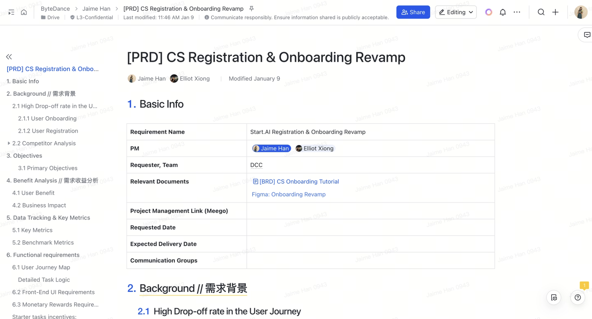
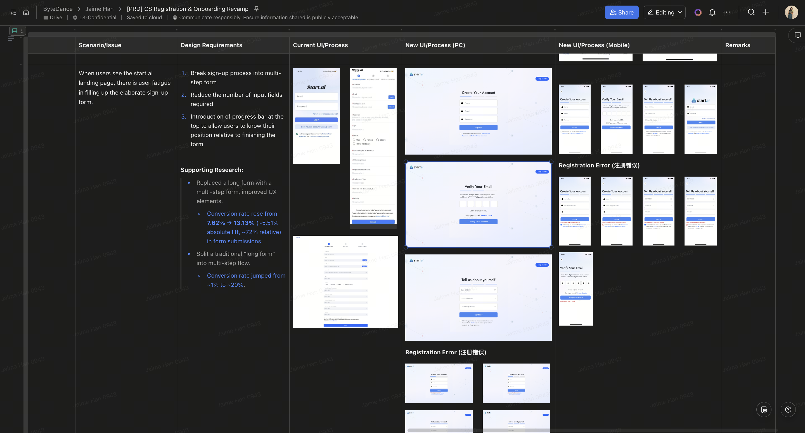
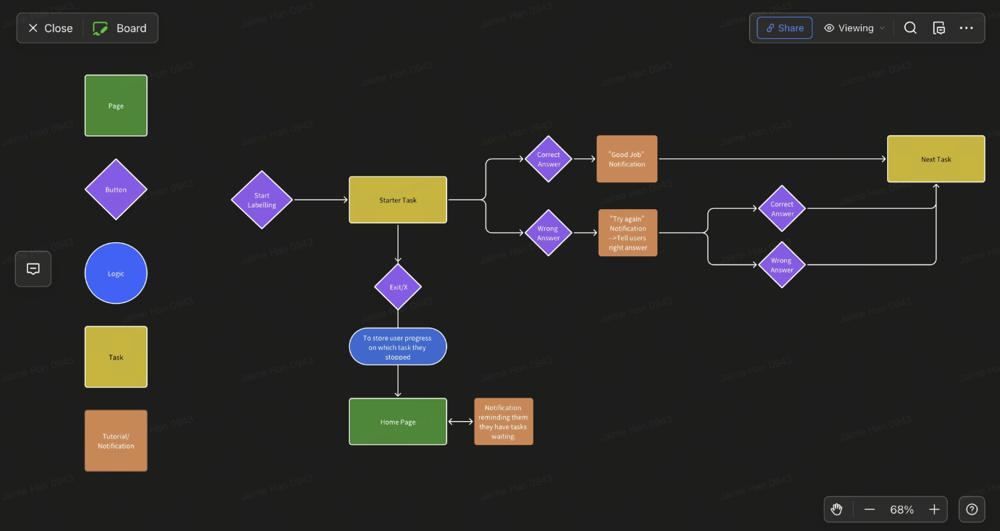
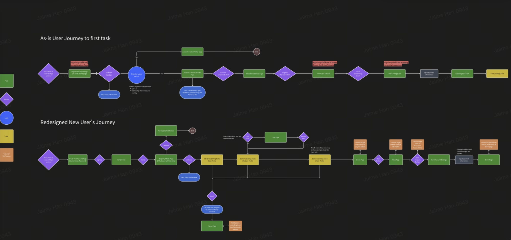
Responsive User Interface Design
As the lead UI/UX designer in my leanly-designed team, I also took the responsbility of designing the page.
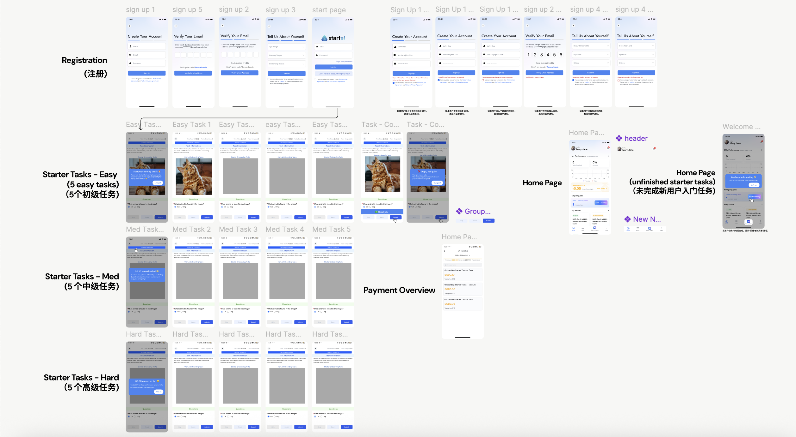
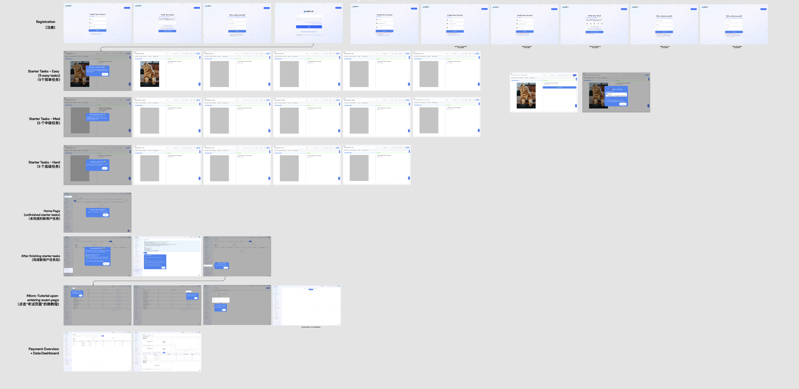
Pitching to stakeholders
Throughout the process, I had weekly meetings with our department head, firstly to propose the benefit this onbording would give, and proving a worthy return of investment. This involved benefit analysis to both users and business, data tracking metrics, and industry research. Furthermore, I continued tracking metrics after deployment to prove the success of the project.
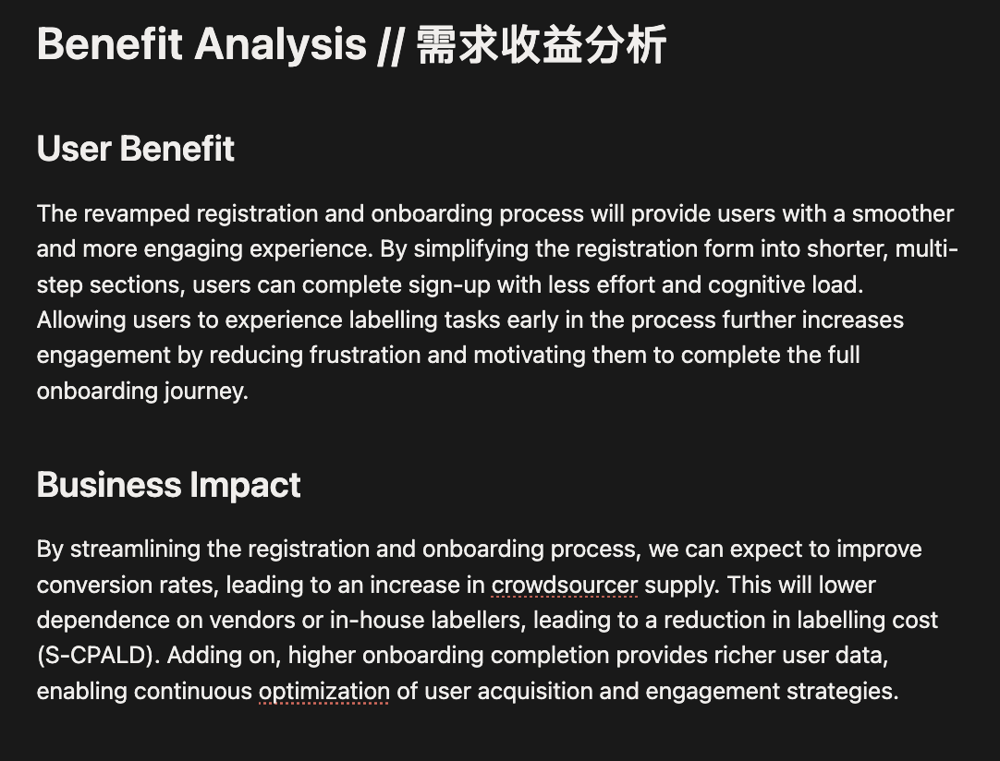
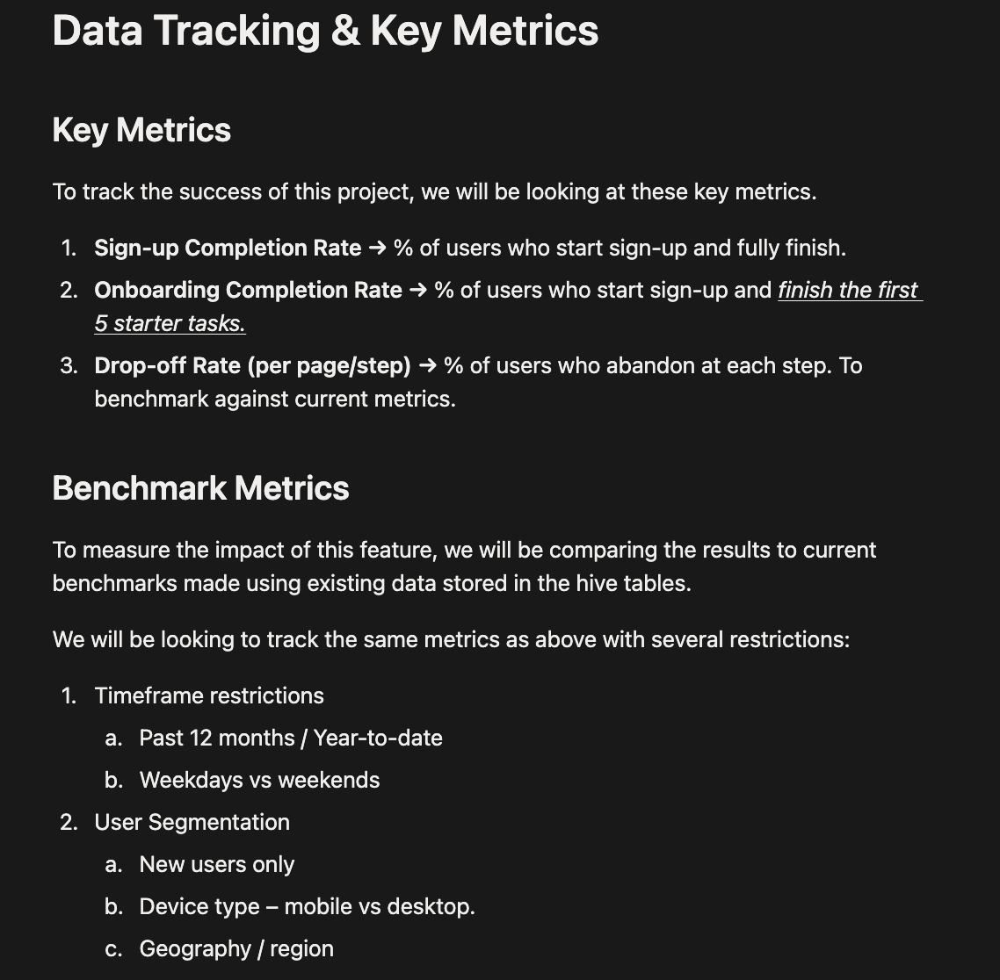